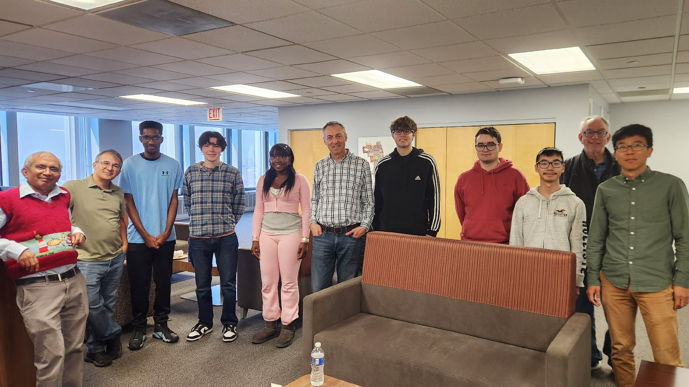
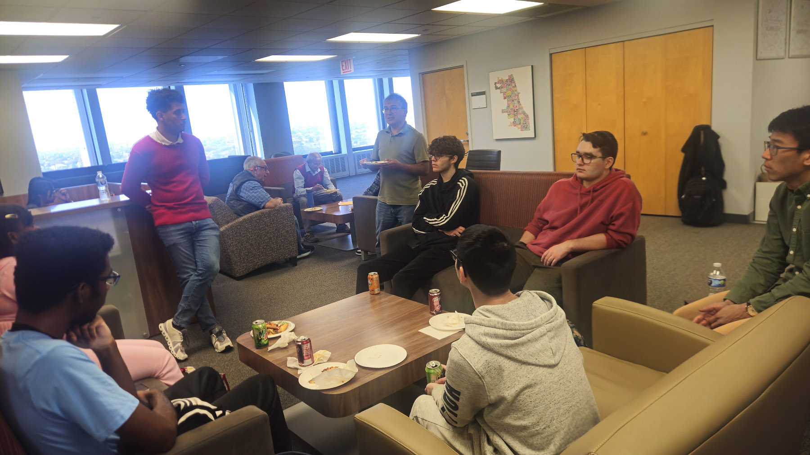
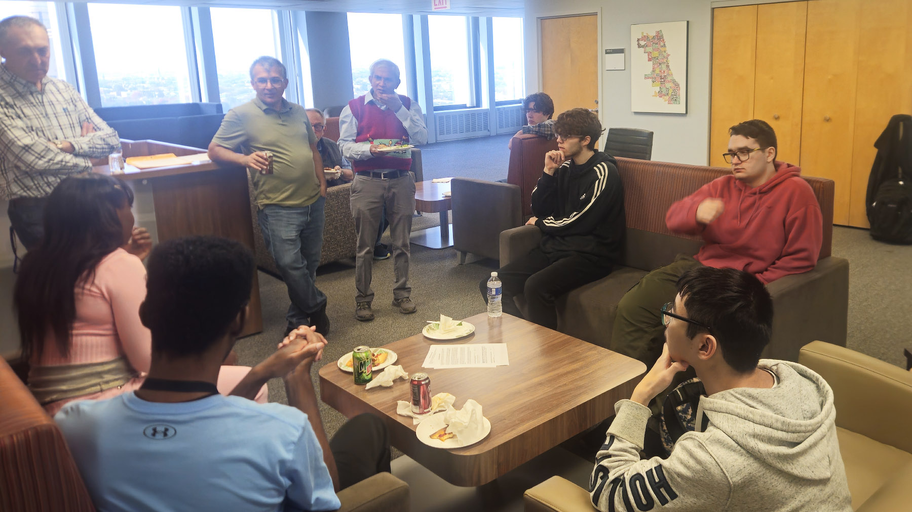

Welcome & orientation
Welcome retreats and orientation activities for new scholars.

Program activities, events, and milestones from the SPARC community.
Welcome retreats and orientation activities for new scholars.
Outdoor activities and team-building experiences to help scholars connect.
Resume reviews, career preparation, and professional development sessions.
Industry and alumni panels that introduce scholars to professional pathways.
Visits to national laboratories such as Argonne and Fermilab may provide opportunities to explore research and technology in practice.
Potential conferences, career events, modeling, data science, cybersecurity, and coding competitions.
Exposure to professional environments and industry practice, where arranged.
Potential connections with Kaplan Institute and IPRO experiences.
Student-led organizations and shared extracurricular experiences can strengthen the scholar community.
A record of SPARC's first cohort and community milestones in 2026.
SPARC scholars and faculty mentors came together for an informal pizza lunch to chat, socialize, and build connections.



The online communication hub for SPARC scholars, mentors, and the leadership team was launched.
SPARC scholars and faculty gathered for a welcome lunch and orientation.
SPARC faculty leaders met with the new SPARC scholars during the SOAR orientation and resource fair.
Following a competitive selection process, including an interview round, scholarship offers were made to and accepted by students from the entering Fall 2026 cohort. The applicant pool included a large cohort of strong, qualified applicants.